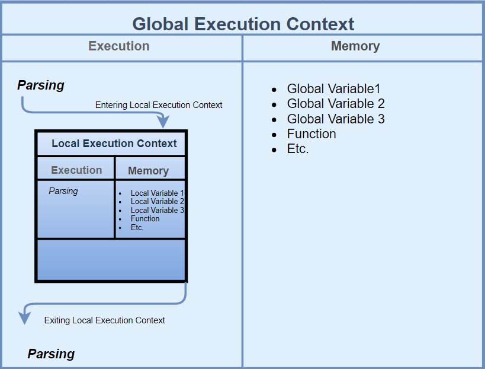

Types of Variables in js
Var,let,const
Var is functional as well as global scope
It can redeclared and initialised
var can be modified later
Let is a Block scope
redeclaration and reinitialization is not possible
let can be modified later
const is a Block scope
redeclaration and reinitialization is not possible
let cannot be modified later
Execution-context
Execution-context is divided into two parts
1.Memory creation phase
2.Code Execution phase
Memory creation phase:
In this phase the variables and functions are stored as key and value pairs .
And memory will be allocated to the variables but it will be undefined .
Code Execution phase
In this phase the code gets executed line by line the memory gets allocated to the variables
the undefined gets turned to the particular value .If any functions exits in the code then new execution
context will be created .In this way the execution continues and after the entire code gets executed the
execution context gets deleted from the call stack.

Print age by using ternary operator.
var age=30;
(age>15) ? "correct age" : "wrong age "
output:-
"correct age"
find age using if else condition
if(age<15){
console.log(Your age not equal to the given age)
} else {
console.log(Your age is equal to the given age )
}
Week calender using switch case
var Day="monday";
switch (Day) {
case "monday":
console.log("The day is monday");
break;
case "Tuesday":
console.log("The day is Tuesday");
break;
case "wedday":
console.log("The day is Wednesday");
break;
case "thursday":
console.log("The day is Thursday");
break;
case "friday":
console.log("The day is Friday");
break;
case "saturday":
console.log("The day is saturday");
break;
default:
break;
}
Hoisting
Hoisting is the phenomenon by which we can access the variables and functions before we actually initialise it
Print the 13th table using for-loop
for(i=1;i<=10;i++) {
console.log(`13*${i}=${13*i}`)
}